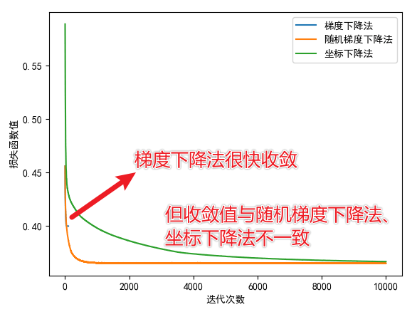
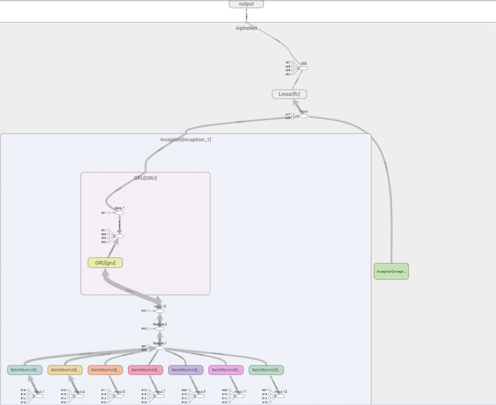
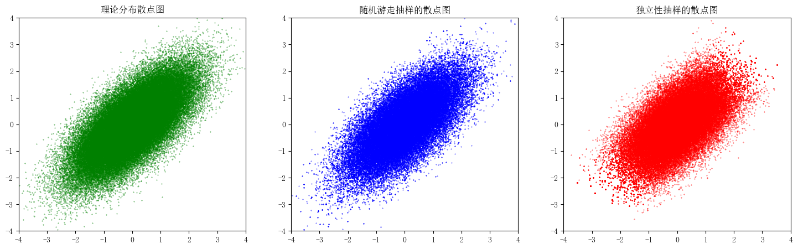
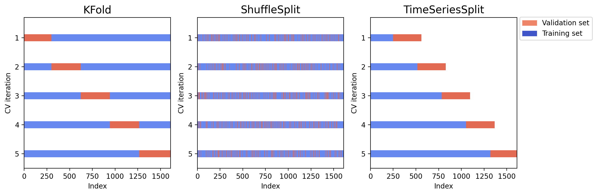

2022 年 12 月¶

当梯度下降陷入局部最优解
应用梯度下降法时，损失函数的值不再发生变化并不一定是找到了全局最优解，可能是陷入了局部最优解。为当前参数加上一个微小扰动，可以帮助跳出局部最优解。

AlphaNet-V3——调整网络结构和预测目标
在 AlphaNet-V1 加入多步长的特征提取层，将池化层替换为门控循环单元（GRU），并尝试预测收益率和超额收益的方向。最后将随机森林模型作为 baseline 进行比较。

AlphaNet——基于深度学习的量价因子挖掘
借鉴卷积神经网络的思想，通过自定义运算符函数，构造类似卷积层的特征提取层。结合批标准化层、池化层、全连接层，搭建 AlphaNet-V1，实现从量价数据到收益率预测的自动挖掘。

PyTorch 处理二分类问题
在量化研究中，将预测收益率数值的回归问题转换为预测涨跌、预测超额收益的正负等二分类问题是十分常见的。在 PyTorch 中可以修改部分代码，让回归问题的网络结构在二分类问题中也同样适用。
PyTorch 查看模型结构：输出张量维度、参数个数
使用pytorch-summary实现Keras中model.summary()的类似效果。
PyTorch DataLoader 加载数据
在 DataLoader 中指定 batch_size 后，可以将输入数据划分为多个 Batch，分批输入到网络中训练。
样本方差的无偏性
样本方差的分母是 n-1，这使得样本方差是总体方差的无偏估计。
在 pandas 中计算方差
pandas 默认的.var()方法计算的是样本方差，即自由度为\(N-1\)。若想计算总体方差，需指定参数ddof=0(1)。
- Delta Degrees of Freedom。当指定
ddof时，计算方差的分母为N-ddof。
总结
- pandas 中的
var()默认的自由度是 n-1，即var(ddof=1)； - NumPy 中的
var()默认的自由度是 n，即var(ddof=0)； - pandas 中的
var(ddof=0)相当于 NumPy 中的var()。
在 Jupyter Notebook 中插入本地图片并导出带有图片的 PDF 文件
将 Notebook 转为 PDF 时通常都嵌有本地图片，本文转载了一个可以成功将图片嵌入 PDF 的方法。
随机抽样之 MCMC 算法
MCMC 算法是一种随机抽样算法。借助建议分布，可以在各个样本状态之间进行转移，最终得到目标分布的样本。本文使用了逐分量 MCMC、随机游走和独立性抽样构造 Ising 分布和二元正态分布的随机样本。

K 折、随机和时间序列交叉验证的 Python 实现
相比 K 折、随机交叉验证方法，时序交叉验证方法不会用到未来信息预测历史结果，在测试集上的表现更稳健。时序交叉验证在时序数据上可以缓解过拟合问题，且训练耗时更少。

LeetCode 刷题记录
值得记录的算法题。
为静态网页生成文件目录
静态网页就相当于一个文件夹，为文件夹中的文件生成目录，可以方便地查找文件。
AdaBoost、GBDT 和 XGBoost 的联系与区别
各类 Boost 方法是基于树模型的集成模型，理解它们的联系与区别有助于理解各个算法的优劣。
自定义交叉验证的样本划分方法
交叉验证是缓解模型过拟合的手段之一。本文以 XGBoost 算法为例，介绍了如何自定义交叉验证中划分训练集和验证集的方法。
XGBoost
推导 XGBoost 中的结构分数以及理解它对于构建 XGBoost 模型的作用。转载一篇写得非常棒的介绍 XGBoost 的文章，真正的通俗易懂。
感谢我人生中的贵人们
我的人生中遇到了很多贵人，Ta 们无私地支持我、帮助我，给予我机会、带给我成长。借兴全投资比赛结束之际，记录此刻的感想。
方差分解公式
应用重期望公式，证明方差分解公式。 $$ \operatorname{Var}(X)=\operatorname{Var}(\mathrm{E}[X \mid Y])+\mathrm{E}[\operatorname{Var}(X \mid Y)] $$
方差缩减技术之条件期望法
使用条件期望法降低蒙特卡洛模拟得到的估计量的方差。
使用 selenium 爬取豆瓣小组讨论信息
使用 selenium 模拟浏览器访问网页，解析并提取需要的信息，实现网络爬虫。